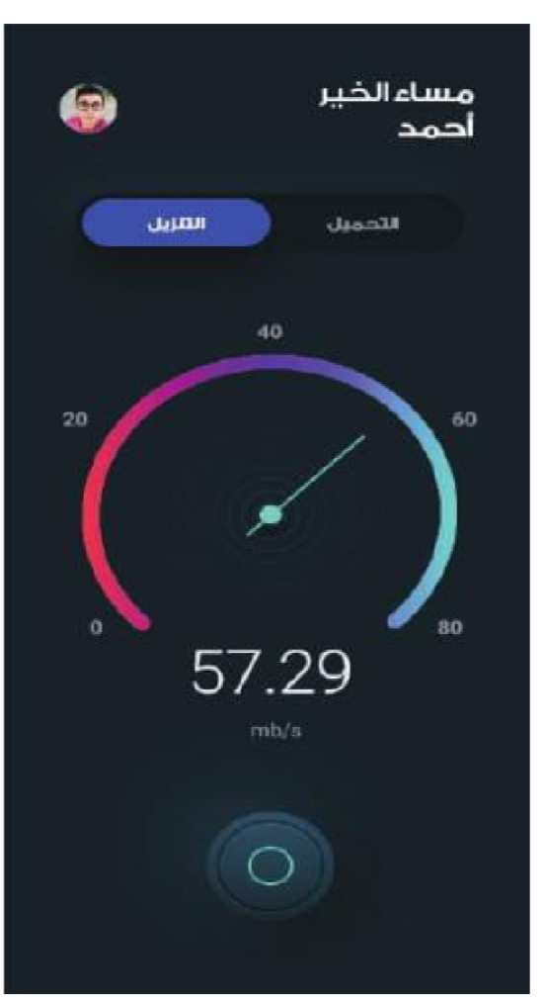

أولًا: مفهوم أداء الشبكة وفاعليتها
وضح المقصود بأداء الشبكة وفاعليتها:
هو مؤشر لمدى جودتها وفاعليتها، ويتضمن تقييم كل من سرعة الاتصال، وجودة التوصيل، ودرجة الموثوقية، وكفاءة الشبكة.
اذكر مثالًا على أداء الشبكة الجيد:
إذا كنت أشاهد درسًا تعليميًا عبر شبكة الإنترنت بجودة عالية من دون توقف، أو أرسلت رسالة إلى صديقي بسرعة من دون تأخير، فهذا يعني أن أداء الشبكة جيد.
المؤشرات الرئيسة لأداء الشبكة
عرض النطاق الترددي
Bandwidth
Bandwidth
تأخر وصول البيانات
Delay
Delay
حجم البيانات المتبادلة
Load
Load
ثانيًا: مميزات الشبكة فائقة السرعة وفوائدها
مميزاتها
فإن الشبكة فائقة الأداء تمتاز بنقلها كمًا كبيرًا من البيانات بسرعة وأمان، واستمرارها في تقديم الخدمة من دون انقطاع أو أخطاء.
فوائدها
- تعزز الإنتاجية.
- تزيد ثقة المستخدم بها.
العوامل التي تؤثر في أداء الشبكة
توجد عوامل عدة تؤثر في أداء الشبكة، أبرزها:
- تأخر وصول البيانات (Delay).
- عرض النطاق الترددي (Bandwidth).
- حجم البيانات المتبادلة (Load).
ثالثًا: تأخر وصول البيانات (Delay)
وضح المقصود بتأخر وصول البيانات:
يقصد بذلك الوقت الذي تستغرقه عملية الإرسال والاستقبال للبيانات بين الأجهزة المتصلة بالشبكة.
العلاقة بين مدة التأخر ووقت الانتظار وأداء الشبكة
فكلما زادت مدة التأخر زاد وقت الانتظار المخصص لنقل البيانات. ولا شك في أن التأخر الكثير يؤثر في أداء الشبكة، لا سيما أثناء أداء المهام المتزامنة، مثل التأخر في وصول الحديث أثناء عقد اجتماع افتراضي بسبب تأخر وصول البيانات.
من أسباب التأخر في وصول البيانات
1. المسافة
المسافة التي تقطعها البيانات في عملية الوصول؛ فكلما كانت المسافة أطول زادت مدة التأخير.
2. وسائط النقل المستخدمة في الشبكة
تختلف وسائط النقل السلكية واللاسلكية فيما بينها من حيث السرعة في نقل البيانات.
رابعًا: عرض النطاق الترددي (Bandwidth)
وضح المقصود بعرض النطاق الترددي:
يقصد بسعة الشبكة أكبر كم من البيانات التي يمكن نقلها عبر الشبكة في وقت محدد؛ فإذا كان عرض النطاق الترددي للشبكة منخفضًا، فإن ذلك سيؤثر سلبًا في سرعة نقل البيانات.

موضع الصورة الأولى من الكتاب